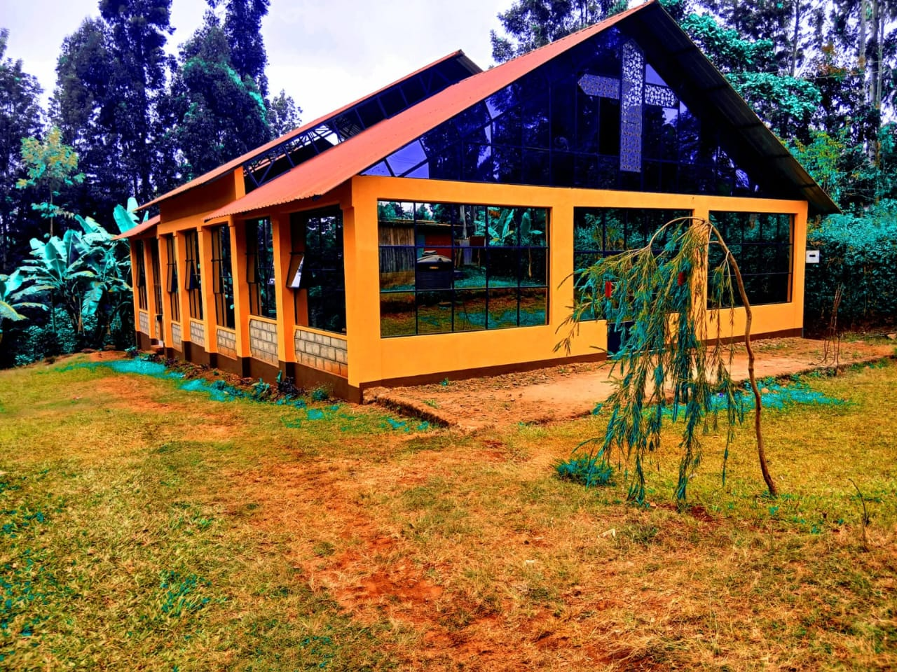

Meet Our Staff
Senior Pastor
REV DOC Isaac Kaimenyi
Administration Pastor
pastor Frank
Worship & Media Minister
Janet
Children Ministry Teacher
Pst Doris Mukiri
Secretary
Stanley
Treasurer
Elijah

Chairman
Mutuma
Youth chairman
Bonface Kirimi

Youth chairlady
Makadi